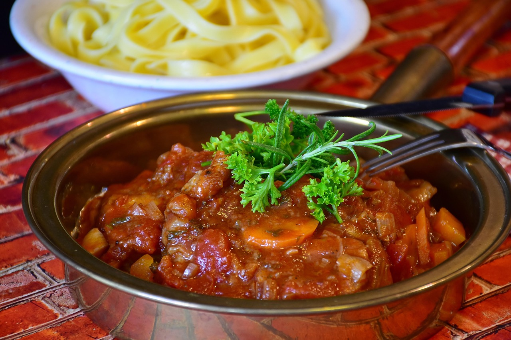

Ossobuco

Recipe from Vincenzos plate
Description
Ossobucco is a dish originally from the Milanese region in Italy. Throughout the years, many local variations on the dish were developed,
but to me, the Ossobuco Milaneso remains the superior version. I have tried to find an authentic Italian recipe, so please do try it out
for yourself!
Ingredients
- 3 pcs veal shanks, bone-in
- 30g butter
- extra virgin olive oil
- 1 carrot, finely chopped
- 1 large celery stalk, finely chopped
- 1/2 onion, finely chopped
- a bowl of all-purpose flour
- 125 ml white wine
- a tablespoon of tomato paste
- 400g peeled tomatoes, crushed
- salt and pepper
- 1L beef broth
- 1 cup of chopped fresh parsley
Steps
- cut into the edges of the meat, up to 5 cuts per piece
- heat a dutch-oven om medium-high heat
- melt butter and olive oil, then add carrots, celery and onion. Cook for 10 minutes
- while cooking, lightly coat veal shanks in flour
- add up to 2 tablespoons of beef broth to vegetables, then cover to allow to steam
- add meat on top of the vegetables to caramelize, 2-3 minutes on each side, while adding the wine
- remove the veal pieces after 5 minutes
- allow to simmer until wine evaporates and then add tomato paste
- add tomatoes and mix
- sprinkle in pepper and salt and add veal shanks back in
- slowly add in rest of beef broth
- cover and simmer for 1/2 hours, turning the meat every 30 minutes
- remove lid and reduce sauce further for 30 minutes
Home